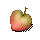

|
Apple |
蘋果 |
1 |
1 |
Gion, Greenville, Canaan Valley |
|  |
Peach |
桃子 |
5 |
2 |
Gion, Greenville, Canaan Valley |
|
Sheep Wool |
羊毛 |
10 |
3 |
Gion (30:100), Greenville (12:235), Rainbow City Suburbia (320:340), Canaan Valley |
|
Rice |
稻米 |
15 |
4 |
Gion (75:100), Greenville (10:180), Rainbow City Suburbia (220:110) |
|
Cotton |
棉花 |
20 |
5 |
Southern Grassland (117:65),Rosen Lake (10:125),Rainbow City Suburbia (138:173), Syrian Plateau, Garden of Dreams |
|
Wheat |
小麥 |
20 |
5 |
Southern Grassland, Rosen Lake (70:130), Syrian Plateau |
|
Flax |
亞麻 |
25 |
6 |
Western Grassland (25:230), Syrian Plateau |